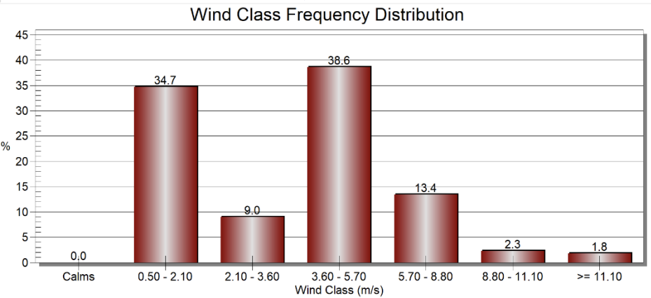
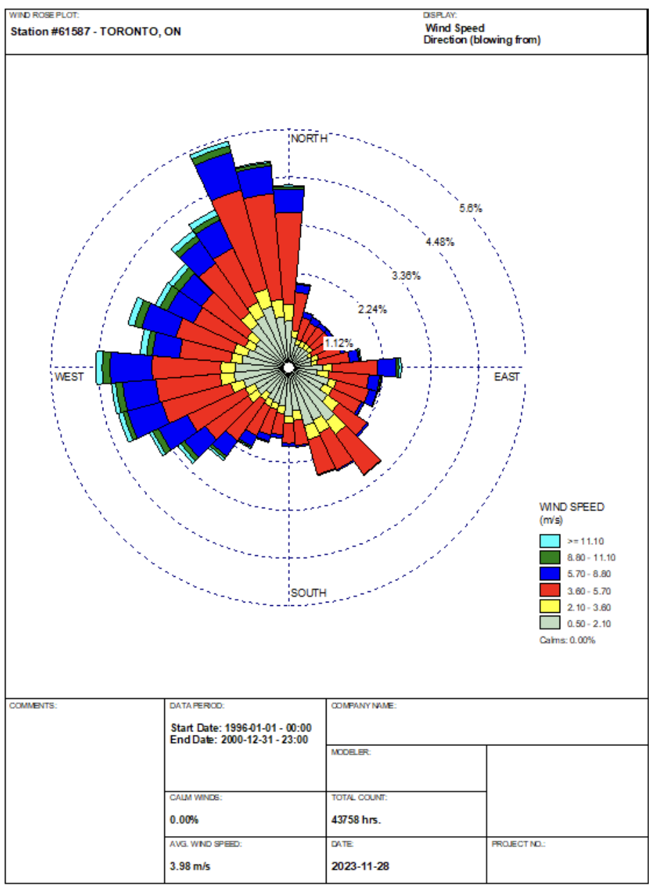
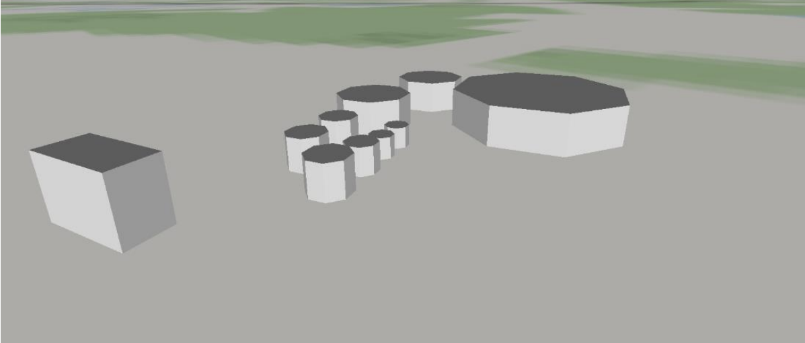
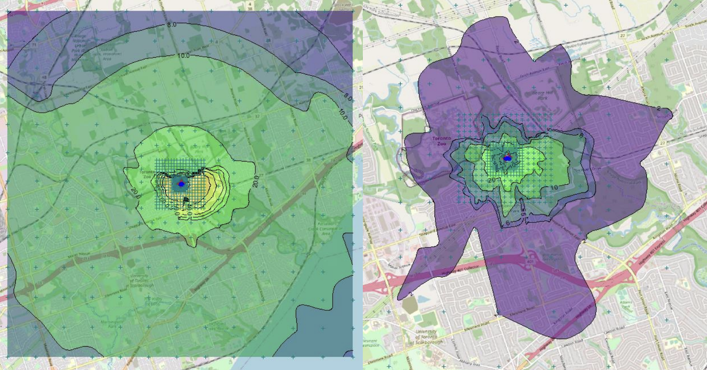

In my AERMOD project, I focused on an environmental analysis of the ZooShare Biogas Co-operative Inc. facility located at the Toronto Zoo. The main goal was to evaluate the air quality impacts of NOx emissions, which is critical for maintaining ecological balance and ensuring compliance with environmental regulations.
Utilizing the AERMOD and AERMET models, I analyzed the dispersion of pollutants, factoring in various environmental variables such as local wind patterns and specific emission rates. This careful examination allowed me to understand the behavior of pollutants in the atmosphere in relation to the facility's operations.
My findings were insightful, revealing that with certain operational adjustments, including modifications in flame height, the facility could successfully stay within the stipulated regulatory limits. This not only ensured that there was no significant adverse impact on the surrounding air quality but also demonstrated the facility's commitment to environmental responsibility.
This project stands as a testament to my ability to apply advanced environmental engineering techniques in practical settings. It highlights my commitment to integrating environmental concerns with engineering solutions, ensuring that renewable energy projects like the ZooShare Biogas facility operate in an ecologically responsible and compliant manner.
   